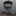
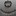
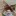

阿前的酒精爐爐架
酒精爐沒自帶爐架的話，都需要額外一個爐架。網路購買記得多比價！
索引
組合式輕量鈦片爐架 重量16g 網路購買
阿前第一個入手的輕量爐架，可以收納進鍋子內，支援13cm以上的鍋子。
缺點是很薄，容易金屬疲勞，組裝後較軟，要小心架鍋子。

捲收式不鏽鋼片爐架 重量20g 網路購買
網狀的輕量爐架，網狀結構空氣流動更好。
可以做三個大小的切換，適合直徑分別至少為9cm、8cm、7cm以上的鍋子或杯子（建議再多1cm安全空間）。
組裝後強度比組合式輕量鈦片爐架高一點點，但還是要小心架鍋子。

X型爐架 重量3g DIY 已丟棄
將鋁罐摺疊剪裁後製成，直接架在汽水罐酒精爐上使用。
原本就有點太軟無法承重太重，某次煙囪爐燃燒實驗扛不住高溫徹底燒毀了。
